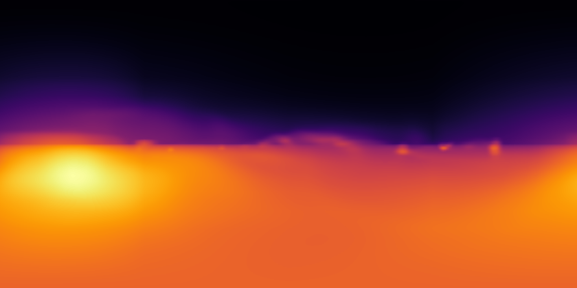
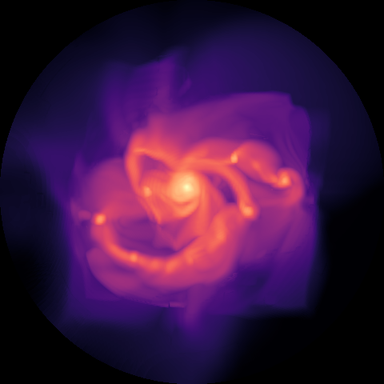
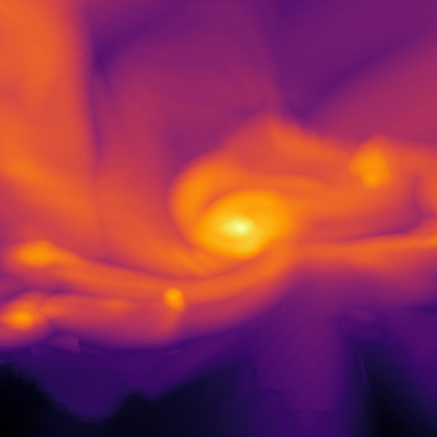
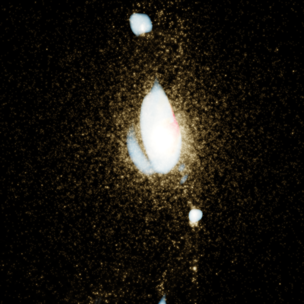
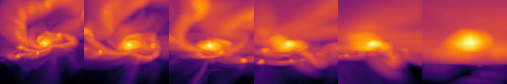
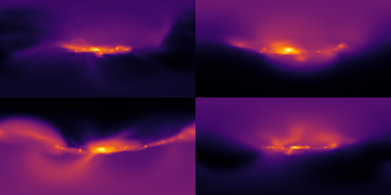
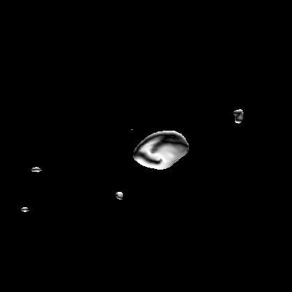
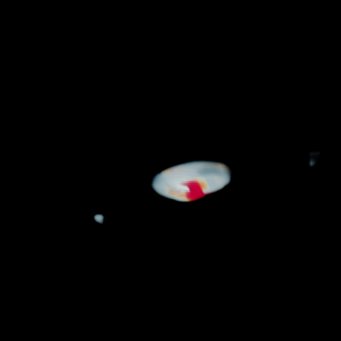
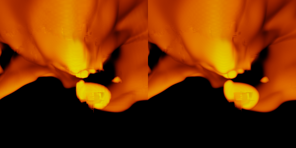

using Mera, CairoMakie # immersive ray-caster is part of Mera; CairoMakie enables mp4 flythrough
CairoMakie.activate!()
println("threads = ", Threads.nthreads())*__ __ _______ ______ _______
| |_| | | _ | | _ |
| | ___| | || | |_| |
| | |___| |_||_| |
| | ___| __ | |
| ||_|| | |___| | | | _ |
|_| |_|_______|___| |_|__| |__|
Mera v1.8.0
threads = 8Immersive 3-D visualisation (equirectangular, dome, fly-through, multi-tracer)
Mera's projection is orthographic (parallel rays). Immersive formats need a camera at a point with rays fanning outward, so Mera's volume ray-caster ray-marches the AMR octree directly — it does not resample to a uniform grid (that would be the (2^lmax)³ memory blow-up AMR exists to avoid). Each leaf is stored once in a per-level hash; each ray steps by the local cell size, so cost scales like the simulation, not the box.
De-blocking AMR. Nearest-leaf sampling is piecewise-constant → coarse cells look blocky. render_view/render_scene default to smooth=true: cross-level trilinear reconstruction (interpolate the 8 surrounding leaf values at the local cell spacing, each looked up finest→coarsest), plus aa supersampling. To zoom a large simulation, pass a subregion to amr_volume first.
base = get(ENV, "MERA_TEST_DATA", "/Volumes/FASTStorage/Simulations/Mera-Tests")
info = getinfo(100, joinpath(base, "RAMSES/spiral_clumps"), verbose=false)
gas = gethydro(info, verbose=false, show_progress=false)
vol = amr_volume(gas, :rho, :nH) # per-level leaf hash; NO uniform grid
c = boxcenter(vol) # box centre, code unitsamr_volume: 590311 leaves, levels 5–7, boxlen 100.0 [code] (no uniform grid — native AMR marching)
(50.0, 50.0, 50.0)1. Equirectangular 360° all-sky
An observer at the galaxy centre looking out in every direction. The 2:1 panorama is what VR viewers, YouTube-360 and planetariums consume — the disk appears as a bright band, the poles empty.
img = render_view(vol, equirect_camera(c; forward=(1.,0.,0.)); res=420, mode=:emission, smooth=true, aa=2)
view_figure(img; colormap=:inferno)
2. Fisheye / dome master
Hemispherical projection for a planetarium dome — here looking down on the disk (fov_deg=180).
img = render_view(vol, fisheye_camera(c .+ (0,0,38), c; fov_deg=180); res=480, mode=:max, smooth=true, aa=2)
view_figure(img; colormap=:magma)
3. Perspective view (smooth, de-blocked)
mode=:max (maximum-intensity projection). smooth=true (cross-level trilinear) removes the AMR blockiness; use smooth=false for a faster, blocky preview.
cam = perspective_camera(c .+ (28,18,22), c; fov_deg=55)
img = render_view(vol, cam; res=480, mode=:max, smooth=true, aa=2)
view_figure(img; colormap=:inferno)
4. Multiple tracers in one image — the "coloured-density" technique
The coloured-density technique: opacity from one field, colour from another. Here a single gas channel takes its opacity from density (:rho) and its hue from temperature (color_by=:T) — cold dense gas reads blue, hot gas red — instead of separate channels fighting. Add stars as a particle channel. The HDR result is ACES filmic tone-mapped, then saturation-graded. The value ranges (vmin/vmax for opacity, color_vmin/vmax for hue) and opacity/gamma are your dials.
# one coherent gas channel: opacity from density, colour from temperature
gas_ch = field_channel(gas, :rho, :nH; color_by=:T, color_unit=:K, colormap=:RdYlBu, reverse=true,
vmin=-0.5, vmax=2.3, color_vmin=3.5, color_vmax=6.5, opacity=12, gamma=1.4,
label="gas (ρ→opacity, T→colour)")
parts = getparticles(info, verbose=false, show_progress=false)
stars = points_channel(parts; weight=:mass, color=(1.0,0.85,0.6), size=0.8, opacity=0.18,
label="stars") # filter=getvar(parts,:age,:Myr).<50 for young stars only
img = render_scene([gas_ch, stars], perspective_camera(c .+ (34,10,16), c; fov_deg=50);
res=600, aa=2, smooth=true, exposure=2.4, saturation=1.4)
save_scene(img, "/Users/mabe/code-github/Mera.jl/docs/src/assets/immersive/composite.png")
scene_figure(img)
5. Fly-through movies
flythrough interpolates the camera (Catmull–Rom) through (position, target) keyframes and records an mp4. kind=:perspective is a normal fly-through; :equirect a moving 360° panorama; :fisheye a moving dome. (Rendering is smooth=true by default; use smooth=false/lower res for faster previews.)
ASSET = "/Users/mabe/code-github/Mera.jl/docs/src/assets/immersive"; mkpath(ASSET)
kf_persp = [(c.+(40,30,34), c), (c.+(20,-25,16), c), (c.+(-22,-8,7), c), (c.+(-4,6,2.5), c)]
kf_equi = [(c.+(-30,0,3), c.+(1,0,0)), (c.+(0,0,2), c.+(1,0,0)), (c.+(30,0,3), c.+(1,0,0))]
flythrough(vol, :perspective, kf_persp; nframes=72, res=420, mode=:max, framerate=20, fov_deg=58,
filename=joinpath(ASSET, "flythrough_perspective.mp4"), verbose=false)
flythrough(vol, :equirect, kf_equi; nframes=48, res=300, mode=:emission, framerate=16,
filename=joinpath(ASSET, "flythrough_equirect.mp4"), verbose=false)
println("wrote fly-through mp4s")wrote fly-through mp4sFrame strip of the perspective fly-in (flythrough_montage renders frames along the same path so the movie has a visible code→picture output here in the notebook):
flythrough_montage(vol, :perspective, kf_persp; nframes=6, res=240, mode=:max, fov_deg=58)
Frame strip of the moving 360° equirectangular fly-through:
flythrough_montage(vol, :equirect, kf_equi; nframes=4, cols=2, res=200, mode=:emission)
The full movies (mp4) are embedded in the rendered documentation page:
6. Isosurface (mode=:iso) — physical value-surfaces, gradient-shaded
Render the surface where a field crosses a value (here nH = 1 cm⁻³), lit by the field gradient (normal). Physically meaningful structure with real 3-D form (vs a smear).
iso = render_view(vol, perspective_camera(c .+ (30,20,24), c; fov_deg=55);
res=420, mode=:iso, level=1.0, aa=2) # nH = 1 cm⁻³ surface, gradient-shaded
as_image(iso; colormap=:bone, logscale=false)
7. Field-driven RT absorption (absorb_by)
Emission from one field, absorption from another — the physical emission + self-absorption case. Here density emits (coloured by temperature) and is self-absorbed by its own column (a stand-in for dust); the far side of the disk is dimmed.
em = field_channel(gas, :rho, :nH; color_by=:T, color_unit=:K, colormap=:RdYlBu, reverse=true,
vmin=-0.5, vmax=2.3, color_vmin=3.5, color_vmax=6.5,
absorb_by=:rho, absorb_unit=:nH, absorb_vmin=0.0, absorb_vmax=2.3, opacity=9)
render_scene([em], perspective_camera(c .+ (34,10,16), c; fov_deg=50); res=480, aa=2, exposure=2.4)
8. smooth=:kernel — cosmetic de-blocking of coarse cells
A narrow high-temperature band makes a near-binary mask of the coarsest AMR cells → blocky faces with smooth=true (trilinear, C⁰). smooth=:kernel (cubic B-spline, C²) blurs those facets — softer but non-conservative, for beauty frames only. Left: trilinear · Right: :kernel.
hot = field_channel(gas, :T, :K; colormap=[:black,:orangered,:gold], vmin=6.9, vmax=7.8, opacity=2.0)
camk = perspective_camera(c .+ (40,6,15), c; fov_deg=52)
tri = render_scene([hot], camk; res=300, aa=2, smooth=true, exposure=1.6) # C0 trilinear (faceted)
ker = render_scene([hot], camk; res=300, aa=2, smooth=:kernel, exposure=1.6) # C2 kernel (softened)
hcat(tri, ker)
9. Interactive window (live, pure AMR)
interactive_view opens a live window that ray-casts the AMR data directly (no uniform grid) and re-renders as you orbit (left-drag) / zoom (scroll) — low-res while moving, crisp on release. It needs an interactive backend, so it is shown here as code (not executed in this CairoMakie notebook):
using GLMakie # interactive backend
interactive_view(vol; mode=:max) # orbit: left-drag · zoom: scroll · also :emission/:rt/:isoParameters & tuning — the dials
Everything is exported from Mera (using Mera; add using CairoMakie only for the mp4 flythrough). It works on any simulation Mera reads — point getinfo at your output, gethydro/getparticles, then amr_volume(data, var, unit) (any getvar quantity). Camera positions are in code units (0…boxlen); boxcenter(vol) is the centre.
| Want to change… | Parameter | Where |
|---|---|---|
| Viewpoint / zoom | camera pos, target, fov_deg (smaller = more zoom) | perspective_camera(pos, target; fov_deg=…) |
| View type | perspective_camera / equirect_camera (360°) / fisheye_camera (dome) | — |
| Resolution / smoothness | res, aa (1–3), smooth=true | render_view / render_scene |
| What accumulates | mode= :max (crisp MIP) / :emission / :rt / :sum | render_view |
| Which density range shows | vmin / vmax (log of the opacity field) | field_channel |
| Colour from a 2nd field (coloured-density) | color_by=:T, color_vmin / color_vmax, colormap, reverse | field_channel |
| How solid / wispy | opacity (higher = solider), gamma (>1 = wispier) | field_channel |
| Stars | weight, filter (e.g. young), color, size, opacity | points_channel |
| Overall look | exposure (brightness), saturation, gamma, bg | render_scene |
| Big sim → zoom region | pass a subregion(data, …) before amr_volume | amr_volume |
Tip — pick value ranges from the data. On a new simulation, inspect the field ranges to choose vmin/vmax (and color_vmin/color_vmax):
extrema(log10.(filter(>(0), getvar(gas, :rho, :nH)))) # → vmin/vmax for the opacity field
extrema(log10.(filter(>(0), getvar(gas, :T, :K)))) # → color_vmin/color_vmax for the hue fieldThen iterate: render a low-res still, adjust the dials, re-render. smooth=false/lower res for fast previews; raise res/aa for the final frame. Diffuse channels (a hot halo) should use a low opacity so you see through them; raise gamma to thin them further.
Concepts & references
- Volume rendering / emission–absorption integral (
mode=:emission/:rt). Max (1995), Optical Models for Direct Volume Rendering, IEEE TVCG 1(2). - Front-to-back alpha compositing ("over"). Porter & Duff (1984), Compositing Digital Images, SIGGRAPH.
- Transfer functions / coloured-density (
color_by,colormap,opacity,gamma). Levoy (1988), Display of Surfaces from Volume Data, IEEE CG&A 8(3). - Maximum-intensity projection (
mode=:max). Wallis et al. (1989), IEEE TMI 8(4). - Trilinear reconstruction (the
smooth=truede-blocking). Engel et al. (2006), Real-Time Volume Graphics. - Adaptive Mesh Refinement (the data marched natively). Berger & Colella (1989), JCP 82(1).
- Catmull–Rom splines (camera paths in
flythrough). Catmull & Rom (1974). - Equirectangular (plate-carrée) mapping (
equirect_camera). Snyder (1987), Map Projections — A Working Manual. - Angular fisheye / dome master (
fisheye_camera). Bourke (2004), Computer Generated Angular Fisheye Projections. - ACES filmic tone mapping (
render_scene). Narkowicz (2016), ACES Filmic Tone Mapping Curve. - Perceptually-uniform colormaps (
:inferno/:magma). Kovesi (2015), arXiv:1509.03700.